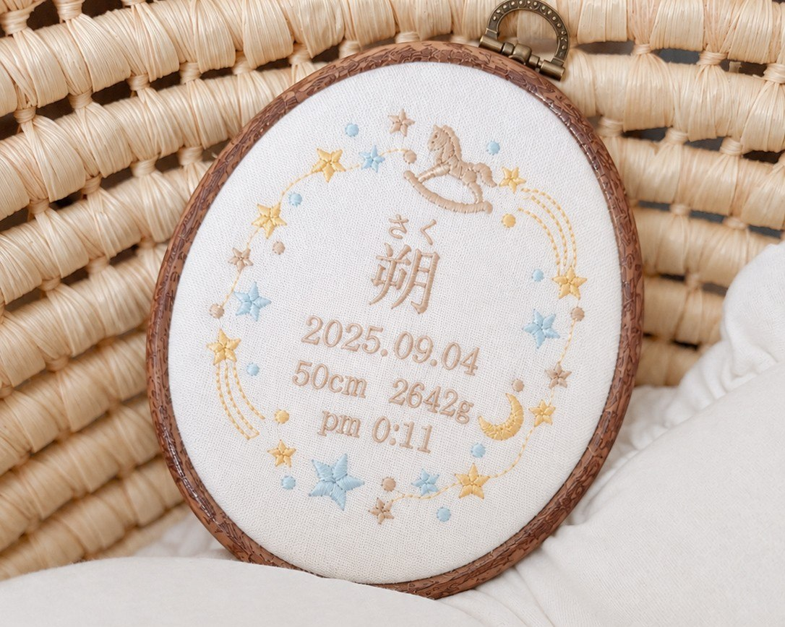
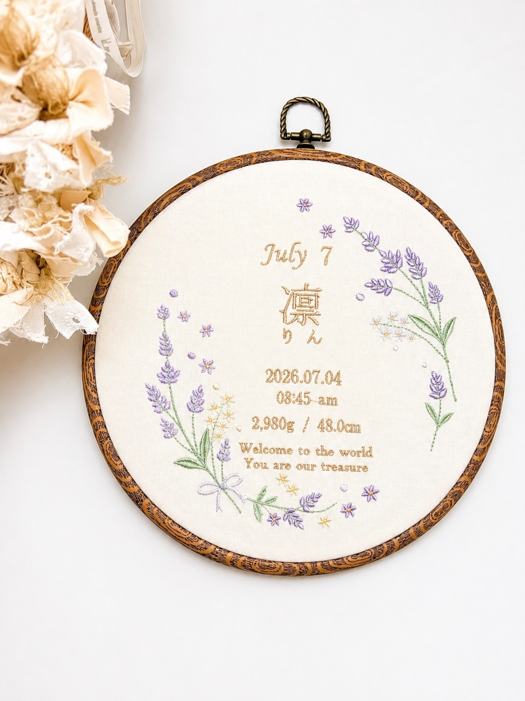
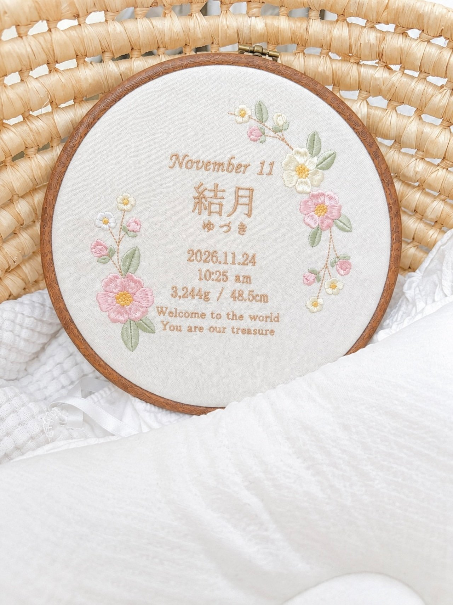

午年（2026年）生まれの赤ちゃんへ
馬モチーフの命名書という選び方

2026年は午年（うまどし）。今年生まれた赤ちゃんの命名書に、干支の馬をモチーフとして添えるご家庭が増えています。この記事では、馬に込められた縁起のいい意味や、命名書に干支を取り入れる魅力、刺繍の命名書で午年らしさを残すアイデアを、命名書を手がける刺繍作家の目線でご紹介します。
午年の「馬」に込められた願い
馬は昔から、人の暮らしに寄り添ってきた身近な動物。干支の馬にも、赤ちゃんの成長を願うのにぴったりな意味がたくさんあります。
・元気に駆けまわれるように 力強く走る姿から、健やかな成長や活発さの象徴に
・物事が「うま」くいくように 「うま」の音にかけて、昔から縁起物として親しまれています
・まっすぐ前へ進めるように 前を向いて進む姿から、目標に向かって進んでいく力の象徴に
「この子が元気に、のびのび育ちますように」——命名書に込める願いと、馬の持つイメージはとても相性がいいんです。
命名書に干支を入れるという選び方
命名書には決まったデザインはないので、お名前や生年月日に加えて、生まれ年の干支をモチーフとして添えることもできます。
干支が入っていると、何年たっても「この子は午年に生まれたんだな」とひと目でわかるのがうれしいところ。12年ごとにめぐってくる年女・年男のたびに見返したり、お正月に飾ったりと、成長の節目ごとに思い出せる一枚になります。
ただ、干支のモチーフは選び方によっては「和」の雰囲気が強くなりがち。お部屋のインテリアになじませたい方には、やわらかい色合いの馬モチーフを選ぶのがおすすめです。
刺繍でつくる、午年の命名書
lil iro baby（リルイロ）では、星や月、ゆらゆら揺れる木馬をあしらった、淡くやさしい色合いの刺繍命名書を新しく制作しています。木馬は海外の子ども部屋でも定番のモチーフなので、干支でありながら洋風のインテリアにもなじむのが魅力です。
カラーはブルー系・ピンク系の2色をご用意予定。お名前と出生記録をひと針ずつ刺繍でお入れします。刺繍データは既製のテンプレートではなく、モチーフから一点ずつ自分でデータを作成しています。
新作の販売開始はInstagramでお知らせします。
刺繍でお入れできる内容
・お名前（漢字＋ふりがな）
・生年月日（西暦・和暦どちらも対応）
・生まれた時間、体重・身長
また、誕生月のお花を添えた命名書も、生まれ年と生まれ月の両方を残せる組み合わせとして人気です。お花も、誕生月以外のお好きなモチーフでご相談いただけます。

▲ 7月生まれ ラベンダー

▲ 11月生まれ サザンカ
今からオーダーしても間に合う？
命名書は、お七夜やお宮参りのタイミングに飾るのが一般的ですが、あとから用意してもまったく問題ありません。最近は、100日祝い（お食い初め）やハーフバースデーの記念撮影に合わせて命名書をそろえる方もたくさんいらっしゃいます。
12月生まれの赤ちゃんも、もちろん午年。年末にご出産予定の方は、妊娠中にデザインの目星をつけておいて、お名前が決まったらご注文いただくとスムーズです。
お届けまでの目安
・納期は通常30日ほど
・お祝いの日が決まっているなど、お急ぎの場合も気軽にご相談ください
・お作りする前にシミュレーション画像をお送りするので、字体や配置を確認してから製作に入ります
一生に一度の、生まれた年の記念。午年に生まれた赤ちゃんの「はじまりの一枚」を、刺繍の命名書で残してみませんか。
生まれ年や誕生月の想いを添えて仕立てる、刺繍の命名書
view item誕生月のお花について詳しく知りたい方はこちらのコラム、命名書をいつまで飾るか迷っている方はこちらのコラムもあわせてご覧ください。
← コラム一覧に戻る